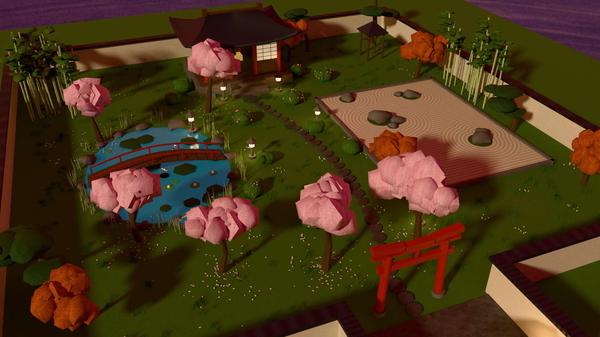
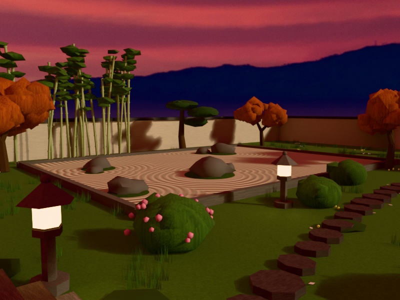
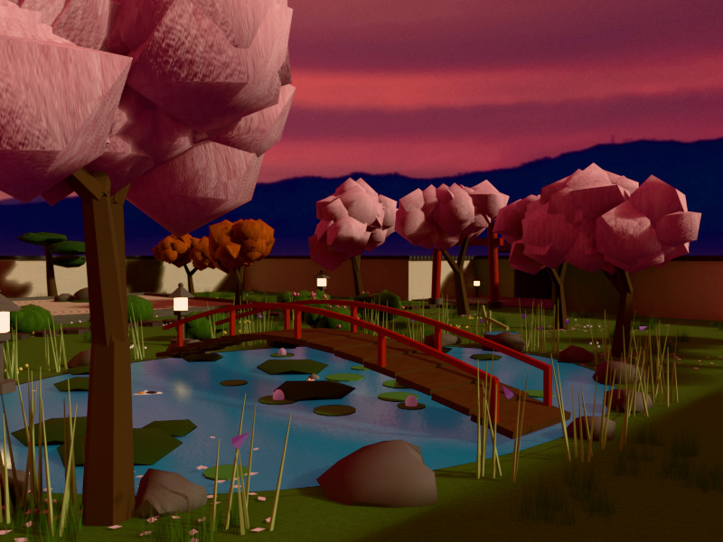
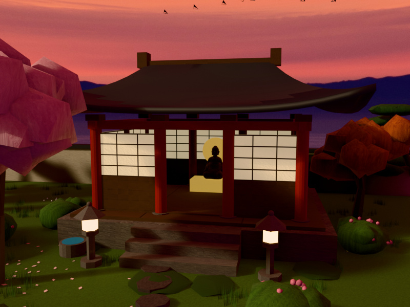

Zen Garden
2026

A walled Japanese Zen garden built as a VRChat world, with a temple, a dry garden of raked sand, a koi pond crossed by an arched wooden bridge, stone lanterns, and trees.
The scene was built procedurally with Claude rather than hand-modelled piece by piece. Every surface, from wood and stone to sand, moss, water, and foliage, comes from textures generated with Python scripts in Blender's node system instead of photographic sources. Each material was written as a generator, with tiling, scale, colour, and wear controlled in the script itself, so re-running the scripts retextures the whole garden without touching a single UV.
Performance stayed Quest-friendly throughout: the detailed version is roughly 115,000 triangles, normal maps were downscaled to 512 px with no visible loss, and the shoji paper uses baked emission rather than a translucency shader, so the glow renders identically on PC and Quest. The finished build stays under 10 MB.


